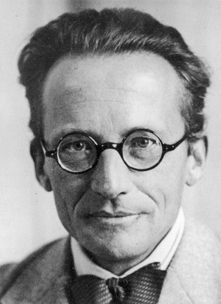

Consider two discrete probability distributions \(\nu_0\) and \(\nu_1\) over \([[1,n]]\). We would like to find a coupling \(\pi(x_0,x_1)\) between \(\nu_0\) and \(\nu_1\) such that, under this coupling \((x_0,X_1) \sim \pi\), the distance \(d(x_0,X_1)\) between \(X_0\) and \(X_1\) is small. Naturally, this can be formulated as the following optimal transport problem:
\[ \mathop{\mathrm{argmin}}_{\pi \in \Pi(\nu_0, \nu_1)} \; \sum_{x_0,x_1} d(x_0,x_1) \, \pi(x_0,x_1), \]
where \(\Pi(\nu_0, \nu_1)\) is the set of couplings between \(\nu_0\) and \(\nu_1\). It is a linear program and can be solved efficiently when \(n\) is not too large. However, the optimal transport plan \(\pi\) is often very sparse since it puts mass on at most \((2n-1)\) pairs \((x_0,x_1)\). This can be undesirable in some applications. Furthermore, small changes in the distributions \(\nu_0\) and \(\nu_1\) can lead to large changes in the optimal transport plan. This sensitivity can be problematic in practice, especially when the distributions are estimated from data.
Static Shrödinger Bridge Problem
A standard way to address these issues is to add an entropic regularization term to the objective function. The resulting problem is known as the Schrödinger bridge problem and can be formulated as follows. Consider a reference joint distribution \(\mu_{\mathrm{ref}}(x_0,x_1)\) over \([[1,n]] \times [[1,n]]\) and find the coupling \(\pi(x_0,x_1)\) that minimizes the Kullback-Leibler divergence to \(\mu_{\mathrm{ref}}\) while matching the marginals \(\nu_0\) and \(\nu_1\):
\[ \mathop{\mathrm{argmin}}_{\pi \in \Pi(\nu_0, \nu_1)} \; \sum_{x_0,x_1} \pi(x_0,x_1) \log \frac{\pi(x_0,x_1)}{\mu_{\mathrm{ref}}(x_0,x_1)}. \tag{1}\]
Furthermore, one can readily see that the optimal coupling \(\pi\) only depends on the conditional distributions of the reference measure \(\mu_{\mathrm{ref}}\), i.e. the conditional law \(\mu_{\mathrm{ref}}(x_1|x_0)\) and \(\mu_{\mathrm{ref}}(x_0|x_1)\). A common choice for the reference measure is a distribution of the form \(\mu_{\mathrm{ref}}(x_0,x_1) \propto \exp(-d(x_0,x_1)/\varepsilon)\). This choice encourages the coupling \(\pi\) to put more mass on pairs \((x_0,x_1)\) that are close according to the distance \(d\) and the resulting optimization problem can be rewritten as:
\[ \mathop{\mathrm{argmin}}_{\pi \in \Pi(\nu_0, \nu_1)} \; \sum_{x_0,x_1} d(x_0,x_1) \, \pi(x_0,x_1) \textcolor{blue}{\; - \; \varepsilon\, \mathrm{H}(\pi)} \tag{2}\]
where \(\mathrm{H}(\pi) = - \sum_{x_0,x_1} \pi(x_0,x_1) \log \pi(x_0,x_1)\) is the entropy of the coupling \(\pi\). Note that since the marginals of \(\pi\) are fixed, it is also equivalent to replacing the entropy term by the negative Kullback-Leibler divergence to the independent coupling \(\nu_0(x_0) \otimes \nu_1(x_1)\),
\[ \mathop{\mathrm{argmin}}_{\pi \in \Pi(\nu_0, \nu_1)} \; \sum_{x_0,x_1} d(x_0,x_1) \, \pi(x_0,x_1) \textcolor{blue}{\; + \; \varepsilon\, D_{\text{KL}}(\pi \mid \nu_0 \otimes \nu_1)}, \]
which can be slightly easier to deal with when working with continuous distributions (the differential entropy \(\mathrm{H}(\pi)\) is not an informationally meaningful quantity because it depends on the choice of coordinates and scale). The entropic regularization term encourages the coupling to be more spread out, which can lead to more robust solutions. The parameter \(\varepsilon\) controls the trade-off between minimizing the transport cost and maximizing the entropy of the coupling. As \(\varepsilon\to 0\), the solution approaches the optimal transport plan, while as \(\varepsilon\to \infty\), the solution approaches the independent coupling \(\pi(x_0,x_1) = \nu_0(x_0) \nu_1(x_1)\). Writing the Lagrange dual formulation of the problem Equation 2 provides fast algorithms to solve it such as the iterative proportional fitting procedure (IPFP), also known as the Sinkhorn-Knopp algorithm in the optimal transport literature. Importantly, it also almost immediately shows that the optimal coupling has a very simple form,
\[ \pi(x_0,x_1) = f(x_0) \, \mu_{\mathrm{ref}}(x_0,x_1) \, g(x_1), \tag{3}\]
for two positive potential functions \(f(x_0)\) and \(g(x_1)\). These potentials function need to satisfy the marginal constraints,
\[ \left\{ \begin{align*} \nu_0(x_0) &= \mu_{\mathrm{ref}}(x_0) \, f(x_0) \, g(0, x_0)\\ \nu_1(x_1) &= \mu_{\mathrm{ref}}(x_1) \, g(x_1) \, f(1, x_1), \end{align*} \right. \]
where we defined the quantities \(g(0,x_0)\) and \(f(1,x_1)\) as follows:
\[ \left\{ \begin{align*} g(0,x_0) &= \sum_{x_1} \mu_{\mathrm{ref}}(x_1 \mid x_0) \, g(x_1) = \mathbb{E}_{\mu_{\mathrm{ref}}}[g(X_1) \mid X_0 = x_0],\\ f(1,x_1) &= \sum_{x_0} \mu_{\mathrm{ref}}(x_0 \mid x_1) \, f(x_0) = \mathbb{E}_{\mu_{\mathrm{ref}}}[f(X_0) \mid X_1 = x_1]. \end{align*} \right. \]
Some details:
The Lagrangian of the constrained convex optimization Equation 1 reads: \[ \begin{align*} \sum_{x_0,x_1} \pi(x_0,x_1) \log \frac{\pi(x_0,x_1)}{\mu_{\mathrm{ref}}(x_0,x_1)} &+ \sum_x \alpha(x_0) \left( \nu_0(x_0) - \sum_y \pi(x_0,x_1) \right)\\ &+ \sum_y \beta(x_1) \left( \nu_1(x_1) - \sum_x \pi(x_0,x_1) \right). \end{align*} \] There is no need to impose a constraint on the total mass of \(\pi\) since it is automatically satisfied by the marginal constraints. For a fixed set of dual variables \(\alpha\) and \(\beta\), minimizing the Lagrangian with respect to \(\pi\) leads to optimum \(\pi_{\alpha, \beta}(x_0,x_1) = \mu_{\mathrm{ref}}(x_0,x_1) \, e^{\alpha(x_0) + \beta(x_1) -1}\), hence proving Equation 3. Plugging this expression back into the Lagrangian gives: \[ \mathcal{L}(\alpha, \beta) = \sum_x \alpha(x_0) \, \nu_0(x_0) + \sum_y \beta(x_1) \, \nu_1(x_1) - \sum_{x_0,x_1} \pi_{\alpha, \beta}(x_0,x_1). \] If one chooses to alternate between maximizing \(\alpha\) and \(\beta\) while keeping the other fixed, this corresponds to alternately enforcing the marginal constraints on \(\pi_{\alpha, \beta}\), i.e. the Iterative proportional fitting procedure (IPFP) also known as the Sinkhorn-Knopp algorithm in the optimal transport literature. Directly maximizing the Lagrange dual \(\mathcal{L}(\alpha, \beta)\) using gradient ascent methods such as L-BFGS is also possible and can lead to faster convergence in some cases. Note that the dual problem only has \(2n\) variables, while the primal problem has \(n^2\) variables!
Dynamic Schrödinger Bridge Problem
Now, suppose that the reference distribution \(\mu_{\mathrm{ref}}(x_0,x_1)\) is given as the two-time marginal of a Markov process \((X_t)_{t \in [0,1]}\) with initial distribution \(\mu_{\mathrm{ref},0}(dx)\) and transition kernels \(p_{s,t}(x,y)\). Since the solution to the static Schrödinger bridge problem only depends on the conditional distributions of the reference measure \(\mu_{\mathrm{ref}}\), one can always assume without loss of generality that the reference process starts from the initial distribution \(\nu_0\). For example, \((X_t)\) could be the solution of a stochastic differential equation. We still denotes by \(\mu_{\mathrm{ref}}([x_t]_{t \in [0,1]})\) the distribution of the full path \((X_t)_{t \in [0,1]}\). The dynamic Schrödinger bridge problem consists in finding a new Markov process \((X_t)_{t \in [0,1]}\), with distribution \(\pi([x_t]_{t \in [0,1]})\) on path space, such that the starting and ending marginals are \(\nu_0\) and \(\nu_1\) respectively, while minimizing the Kullback-Leibler divergence to the reference path distribution \(\mu_{\mathrm{ref}}\). The chain rule for Kullback-Leibler divergences shows that this problem is equivalent to the static Schrödinger bridge problem Equation 1. One can first solve the corresponding static problem with respect to the two-time marginal \(\mu_{\mathrm{ref}}(x_0,x_1)\) to obtain the Schrödinger coupling \(\pi(x_0,x_1)\), and then fill in the dynamics in between times \(0\) and \(1\) by using the same transition kernels as the reference process but conditioned on the endpoints. In other words, once the static Schrödinger bridge problem is solved, one can construct the solution to the dynamic Schrödinger bridge problem as follows:
- Sample the endpoints \((X_0, X_1) \sim \pi(x_0,x_1)\) from the static Schrödinger bridge coupling. d d
- Sample the intermediate points of the path according to the conditional distribution of the reference process given the endpoints, i.e. \((X_t)_{t \in (0,1)} \sim \mu_{\mathrm{ref}}([x_t]_{t \in [0,1]} \mid X_0, X_1)\).
A typical setting is when the reference process \((X_t)\) is given as the solution of a stochastic differential equation of the form
\[ dX_t = b_t(X_t) \, dt + \sigma \, dW_t, \]
started from the initial distribution \(\nu_0(x_0)\). The solution to the dynamic Schrödinger bridge problem is given by the twisted path distribution:
\[ \frac{d\pi}{d\mu_{\mathrm{ref}}}(x_{[0,1]}) = f(X_0) \, g(X_1), \]
for potential functions \(f\) and \(g\) satisfying the marginal constraints. The marginal distribution at time \(t \in [0,1]\) of the Schrödinger bridge process is given by:
\[\pi_t(x_t) = \mu_{\mathrm{ref}}(x_t) \, f(t,x_t) \, g(t,x_t)\]
where, as previously, we defined the quantities:
\[\left\{ \begin{align*} f(t,x_t) &= \int f(x_0) \, \mu_{\mathrm{ref}}(x_0 \mid x_t) \, dx_0,\\ g(t,x_t) &= \int g(x_1) \, \mu_{\mathrm{ref}}(x_1 \mid x_t) \, dx_1. \end{align*} \right. \]
Naturally, the dynamics of the Schrödinger bridge process can be described as a new stochastic differential equation obtained by applying a Doob h-transform to the reference SDE,
\[ dX_t = b_t(X_t) \, dt + \textcolor{blue}{ \sigma \sigma^\top \nabla_x \log g(t, X_t) dt} + \sigma \, dW_t, \]
where, as explained in these previous notes the \(h\)-function is given by the usual formula,
\[ g(t, x_t) = \mathbb{E}_{\mu_{\mathrm{ref}}}[g(X_1) \mid X_t = x_t] = \int g(x_1) \, \mu_{\mathrm{ref}}(x_1 \mid x_t) \, dx_1. \]
It is a difficult problem since the potentials \(f\) and \(g\) need to be found such that the marginal constraints are satisfied. These recent years have seen the development of many numerical methods to solve this problem approximately, especially in the machine learning community, eg: Shi et al. (2023); De Bortoli et al. (2021); Vargas et al. (2021); Chen, Liu, and Theodorou (2021).